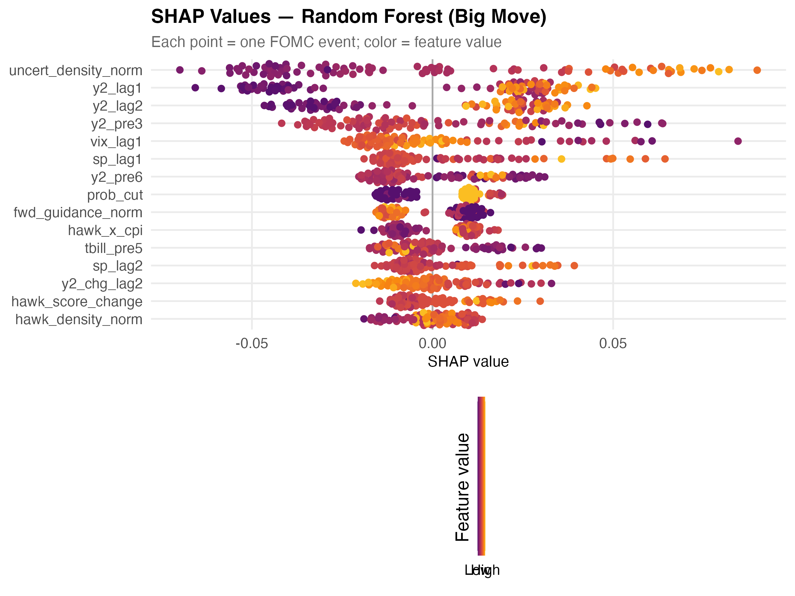
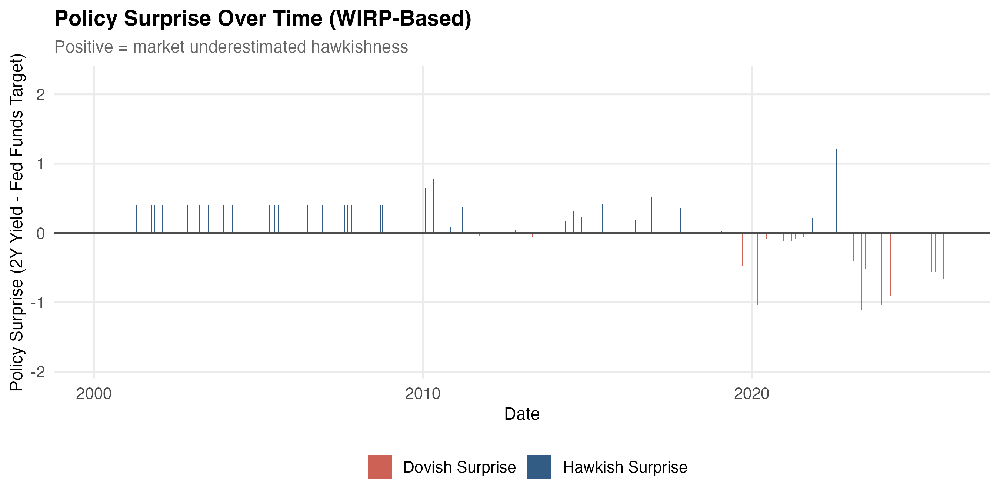
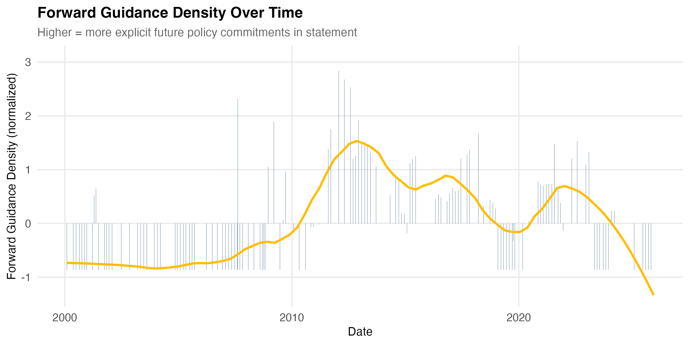

Live Prediction: April 28–29, 2026 FOMC Meeting
Predictions were generated before the 2:00 PM FOMC announcement using real-time market, macroeconomic, and FOMC statement inputs. This page was created to update the poster after printing with the realized live prediction results.
Predicted 2Y Direction
Predicted Large Move
Predicted Magnitude
Actual 2Y Move
Model Vote Summary
| Model | Prediction | Probability / Estimate | Correct? |
|---|---|---|---|
| Logistic Regression Direction | DOWN | 0.000 | No |
| Random Forest Direction | UP | 0.508 | Yes |
| Logistic Regression Big Move | Small Move | 0.068 | No |
| Random Forest Big Move | BIG MOVE | 0.675 | Yes |
| XGBoost Big Move | BIG MOVE | 0.788 | Yes |
| ARIMAX Yield Change | -0.0278 pp (DOWN) | -0.0278 pp | No |
| Lasso Yield Change | +0.0006 pp (flat) | 0.0006 pp | No (direction yes, magnitude off) |
Interpretation
The live prediction exercise provides a true out-of-sample test because model outputs were recorded before the FOMC announcement. While one event cannot fully validate the model, it demonstrates that the framework can be applied in real time to forecast financial market reactions.
The ensemble shows a split on direction (1/2 models predict UP) and majority agreement on a big move (2/3 models). ARIMAX predicts a small downward move of -0.028 pp while Lasso predicts essentially no change. The market priced in a 100% probability of a hold, which was confirmed.
Final result: The big-move models (RF and XGBoost) correctly predicted a large upward move of +0.14 pp. RF correctly called the UP direction. ARIMAX and Logit predicted the wrong direction. Lasso predicted near-zero magnitude but correct direction. 3/5 models correct overall.
Core Results from Historical Test Set
Best Classification Model
Big-Move AUC
Big-Move Accuracy
Best Regression RMSE
Additional Figures
SHAP Values

Policy Surprise Over Time

Forward Guidance Density
